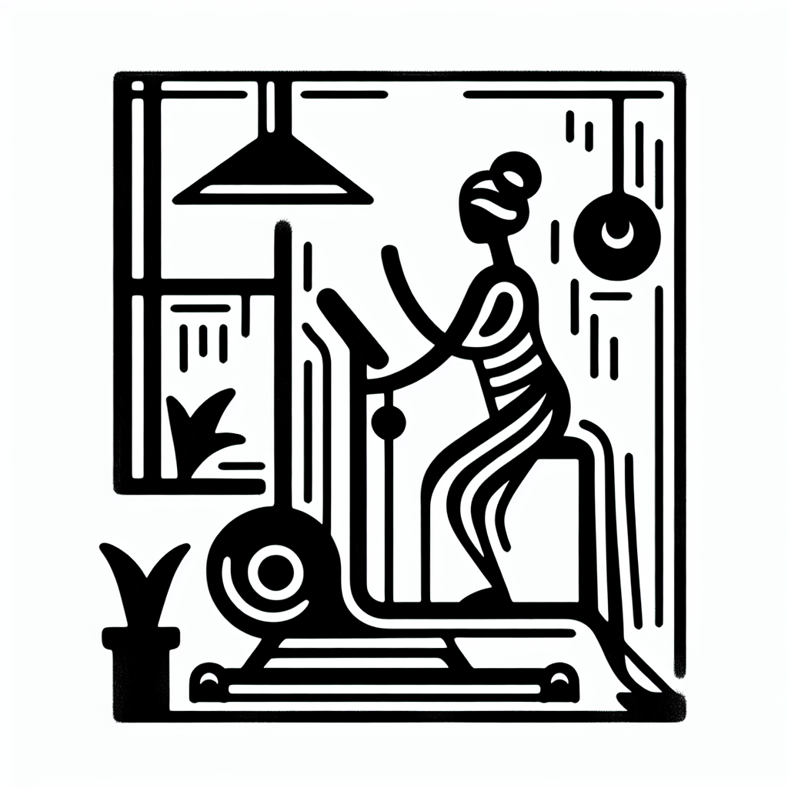

Les 5 bienfaits insoupçonnés du Lagree sur votre posture
Vous êtes-vous déjà demandé comment améliorer votre posture tout en renforçant votre corps de manière globale ? À l’ère des écrans omniprésents et du télétravail, notre posture est souvent mise à rude épreuve. Heureusement, le Lagree, une méthode innovante de renforcement musculaire, pourrait bien être la solution. Chez DOZ à Anglet, nous avons vu de nombreux adeptes transformer leur posture grâce aux bienfaits du Lagree. Découvrons comment.
La méthode Lagree : un entraînement sur-mesure
Le Lagree Fitness n'est pas un simple phénomène de mode. Cette méthode, pratiquée sur les machines MegaPro dans notre studio DOZ, combine des mouvements lents et contrôlés pour travailler vos muscles en profondeur.
- Renforcement global : En sollicitant plusieurs groupes musculaires simultanément, le Lagree sculpte le corps de manière harmonieuse.
- Séances efficaces : En seulement 45 minutes, vous réalisez un entraînement intensif sans impact sur vos articulations.
- Adaptabilité : Quel que soit votre niveau, chaque mouvement peut être adapté pour répondre à vos besoins et vos capacités.
Le Lagree ne se focalise pas uniquement sur la condition physique, il accorde également une grande importance à la posture.
Un tronc plus fort pour une meilleure posture
Une posture droite commence par un tronc solide. Le Lagree cible spécifiquement les muscles profonds de votre sangle abdominale, essentiels pour maintenir une bonne posture.
- Amélioration de l'équilibre : Un tronc puissant contribue à une meilleure stabilité corporelle, réduisant ainsi les chutes et les déséquilibres.
- Soutien de la colonne vertébrale : En renforçant ces muscles, vous offrez un meilleur support à votre colonne vertébrale, essentiel pour réduire les douleurs dorsales.
- Posture assise optimisée : Pour ceux qui passent de longues heures assis, un tronc renforcé aide à maintenir une position neutre et alignée.
Des épaules libérées et détendues
Le stress et les mauvaises postures provoquent souvent une tension excessive dans nos épaules. Le Lagree est particulièrement efficace pour assouplir et renforcer cette région.
- Détente musculaire : Les séries d'exercices ciblés chez DOZ permettent de relâcher les tensions accumulées dans les épaules et le haut du dos.
- Alignement amélioré : En corrigeant l'alignement des épaules, le Lagree aide à réduire la mauvaise posture souvent causée par le stress et la sédentarité.
L'importance des jambes dans la posture
On oublie souvent que notre posture globale dépend aussi de la force et de l’alignement de nos jambes.
- Solidité des jambes : Le Lagree renforce vos quadriceps, ischio-jambiers et mollets, garantissant une meilleure stabilité.
- Amélioration de l'équilibre : Des jambes plus fortes vous aident à tenir une posture droite et stable, même dans les mouvements quotidiens.
Le mental et la posture : un duo indissociable
Nous avons tendance à sous-estimer le lien entre notre état mental et notre posture. Chez DOZ, nous croyons fermement que le bien-être mental va de pair avec le bien-être physique.
- Confiance en soi : En améliorant votre posture, vous développerez une plus grande assurance dans vos interactions quotidiennes.
- Réduction du stress : Une bonne posture peut également contribuer à réduire les niveaux de stress, grâce à une respiration plus efficace et une circulation sanguine accrus.
En intégrant le Lagree à votre routine, vous ferez bien plus que simplement renforcer vos muscles. Vous transformerez votre posture, améliorant ainsi votre qualité de vie au quotidien. Pourquoi ne pas venir essayer une séance chez DOZ ? Venez découvrir un espace unique alliant sport bien-être et café de spécialité, où modernité et simplicité se rencontrent.
N’attendez plus, réservez votre séance Lagree ou passez simplement nous voir pour profiter d’un café savoureux dans notre Coffee Shop.